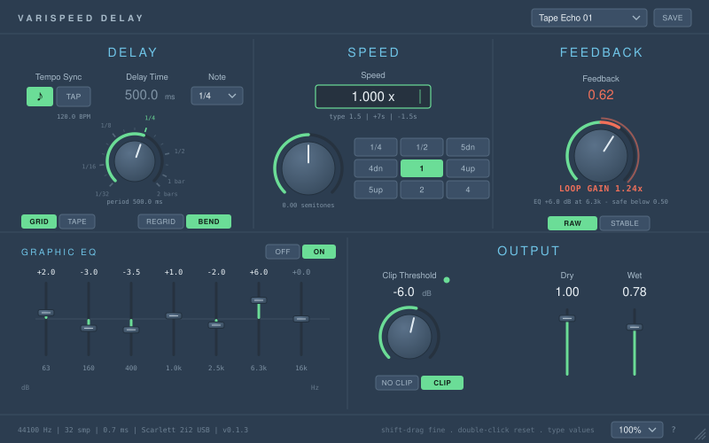
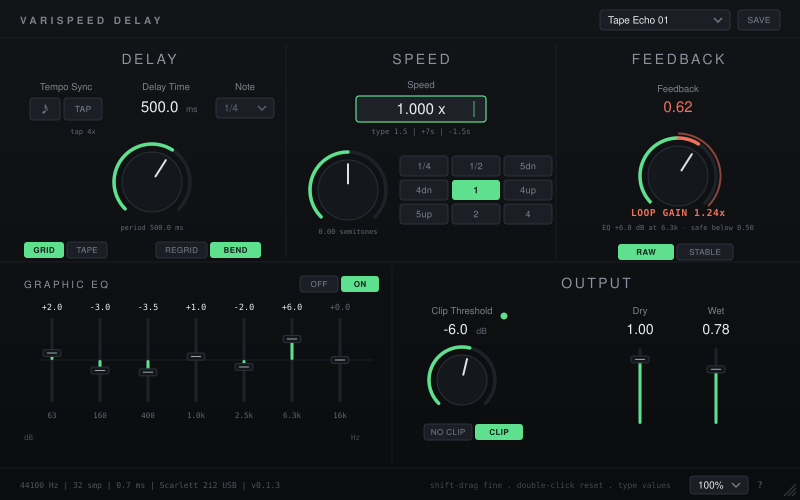
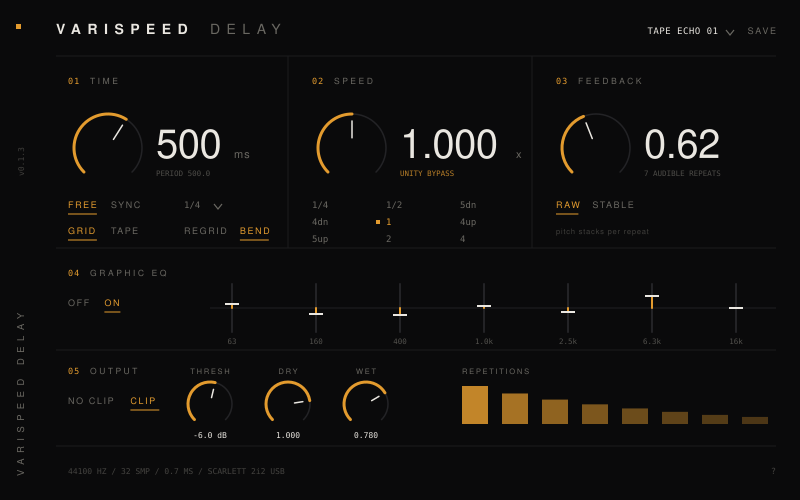
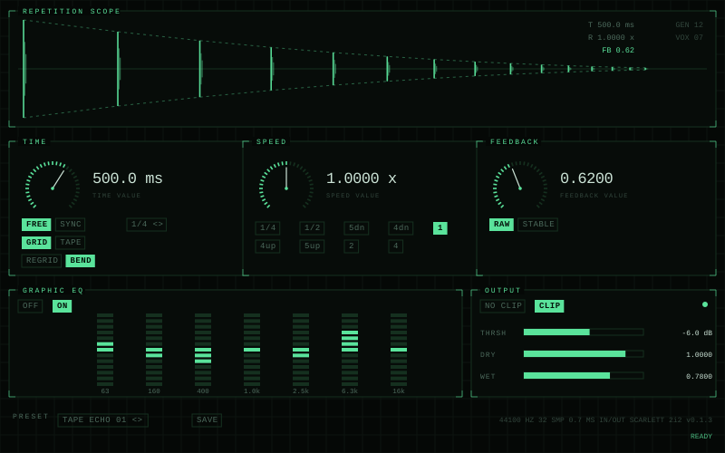
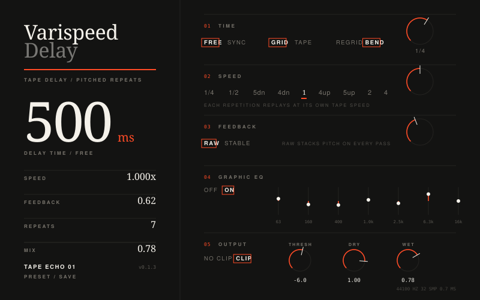
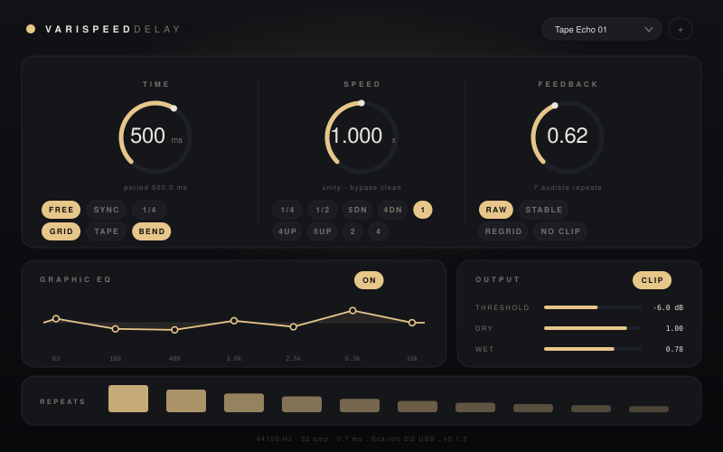

Varispeed Delay — four directions

05 Tapedeck · CURRENT DIRECTION · Logic Tape Delay aesthetics, slate gradient, cyan section titles, green accent. Shown in SYNC mode: detented time knob + Note dropdown

06 Noir · CURRENT DIRECTION · same layout, neutral dark ground, single green accent. Shown in FREE mode: continuous time knob

01 Tape · amber #E39B2E · Futura + Menlo, hairline grid, no boxes, numbered sections

02 Instrument · phosphor #5AE39B · mono terminal, bracketed modules, repetition scope as hero

03 Editorial · vermilion #FF4B26 · Didot masthead, asymmetric split, huge readout

04 Monolith · champagne #E7C68A · soft cards, pills, EQ curve, ultra-light numerals